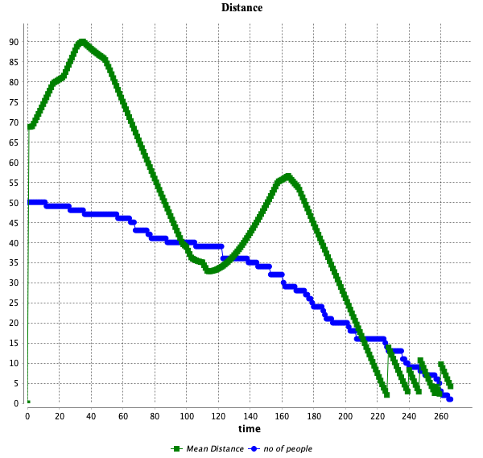

Evacuation
Changes
From the Goto model, I incorporated the continuous field of vision model by adding the code chunk below and modified the heading so that the agents can rotate the vision up to 90° as per the instruction.
//---GAMA Code--//
reflex update_perception {
//the agent perceived a cone (with an amplitude of 60°) at a distance of perception_distance (the intersection with the world shape is just to limit the perception to the world)
perceived_area <- (cone(heading-45,heading+45) intersection world.shape) intersection circle(perception_distance);
//if the perceived area is not nil, we use the masked_by operator to compute the visible area from the perceived area according to the obstacles
if (perceived_area != nil) {
perceived_area <- perceived_area masked_by (wall,precision);
}
}Another change was to measure the mean distance of the agents. Although the instruction required to use the collect argument, after encountering a few trial and errors, I ended up assigning a global variable named mean_distance_to_goal so that I can illustrate the mean distance on the chart.
Finally, I added a stop_simulation code that stops the simulation when all the agents leaves the room.
Interface

Results
Figure 2 illustrates the average distance between the agents’ locations and the exit (target). The average distance among fifty agents began around 70 and increased to 90. Because the agents who started from the bottom left, where the Euclidean distance was closer to the exit, had to find an escape route that was further away from the exit, the mean distance increased. The mean distance quickly fell to 30 after it peaked. This is the first trough, as 12 agents have just exited or were preparing to exit the room. With a smaller group, the mean distance rose to 55 and then fell. The oscillation becomes smaller as the agents left the room.
